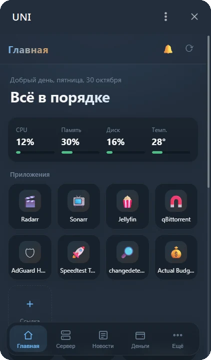
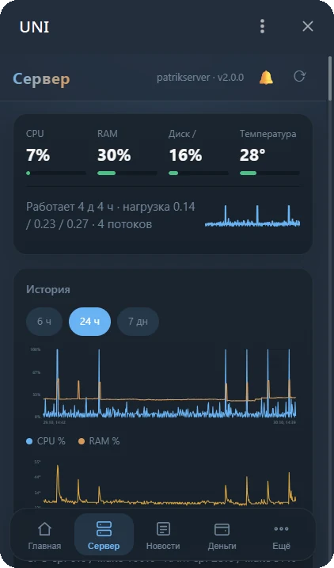
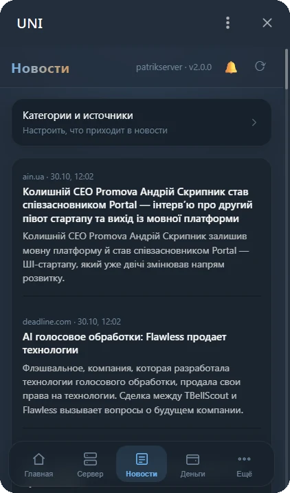
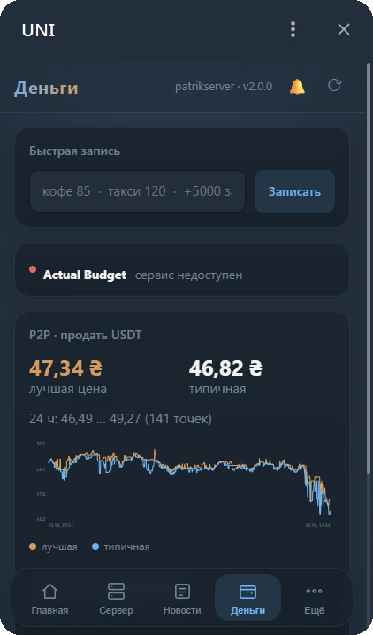
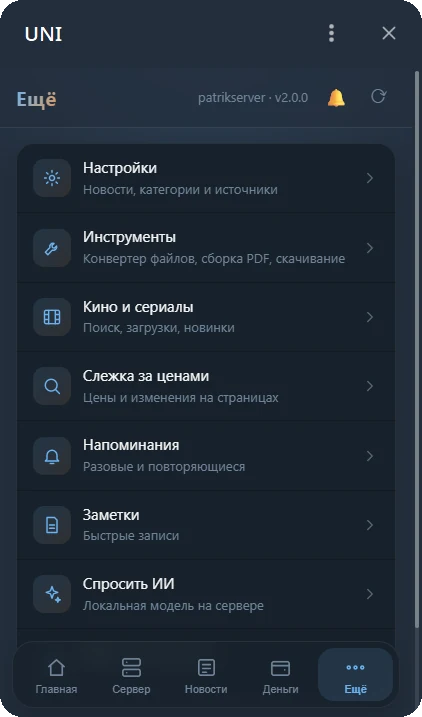

Сводка, приложения, уведомления и веб-панель в одном боте. Свой экземпляр на вашем сервере и свой бот-токен. Ставится одной командой.

Бот показывает только то, что у вас подключено. Остальное не мешает.
Погода, курсы, до пяти новых новостей с пересказом локальной моделью и состояние сервера. Одно сообщение в день, которое тихо обновляется.
CPU, память, диски, температура, графики за неделю, журналы служб, SMART и входы по SSH.
Подключаются прямо из чата. Бот сам находит контейнеры и ключи, вам остаётся нажать «Да».
Веб-панель внутри Telegram: светлая и тёмная тема, чтение новостей без браузера, центр уведомлений.
Упавшие задачи перезапускаются, опечатка в настройках не роняет бота. Ремонт сервера по PIN: службы, бот, перезагрузка.
Гости с отдельными правами. Владелец назначается одноразовым кодом при первом запуске.
Всё, что есть в чате, есть и в панели. Тема берётся из Telegram.




Подключаются из чата. Чего нет, можно поставить из каталога одной кнопкой.
Нужен Linux-сервер: Ubuntu, Debian, Fedora, Arch или Alpine через Docker.
Получите токен у @BotFather.
Скрипт поставит зависимости и спросит токен.
Отправьте боту /start КОД из журнала установки.
# номер версии из последнего релиза
V=6.0.0
curl -fsSL https://github.com/vkardin/uni-homebot/releases/download/v$V/homebot-$V.tar.gz | tar xz
sudo bash homebot/deploy/install.sh
# без systemd и без пакетов в системе
V=6.0.0
curl -fsSL https://github.com/vkardin/uni-homebot/releases/download/v$V/homebot-$V.tar.gz | tar xz
cd homebot && sudo bash deploy/install.sh --docker
Обновление: из чата (⚙️ Настройки → ⬆️ Обновление) или тем же скриптом на сервере. Ваш .env и данные не перезаписываются.